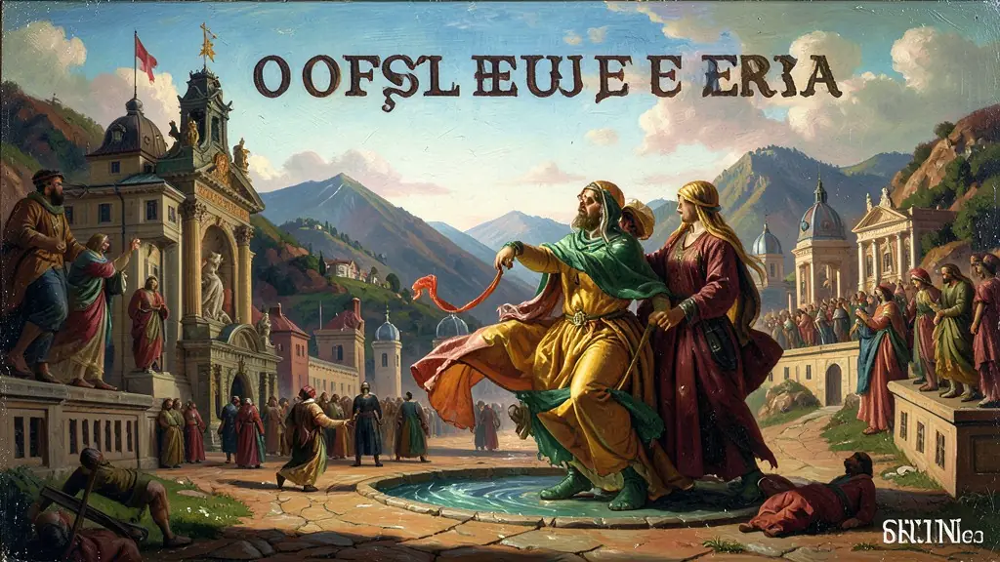
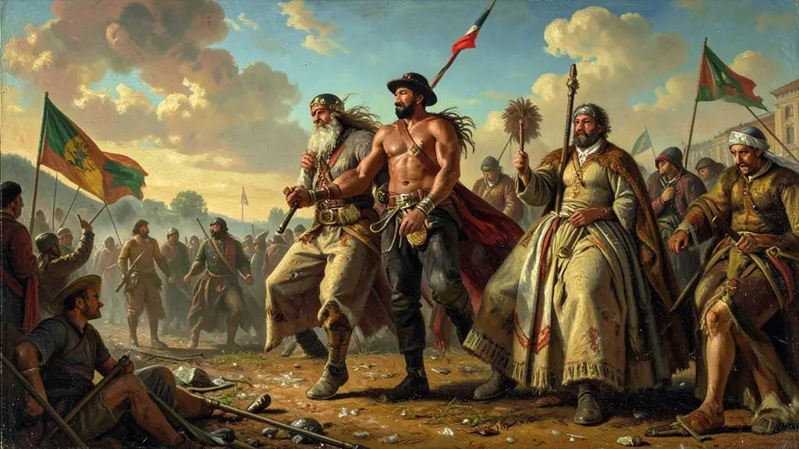
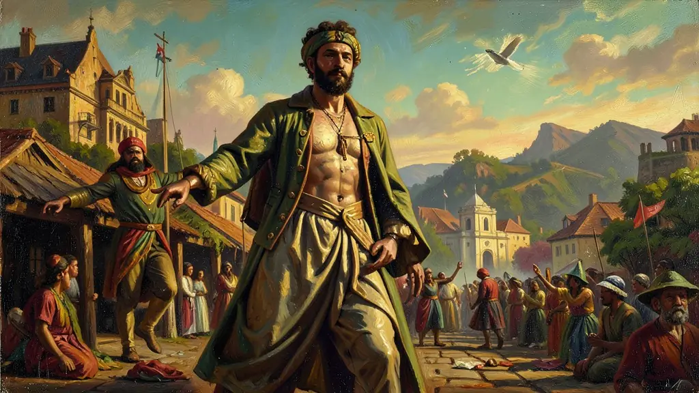

Capítulo 01
1. A Ruptura do Café com Leite
São Paulo achava que só eles sabiam lidar com a crise do café. Quando Washington Luís indicou Júlio Prestes, Minas Gerais sentiu-se traída. O acordo de décadas foi rasgado pelo egoísmo paulista e pelo medo de Minas de perder o acesso ao tesouro nacional. Essa briga de gigantes foi a oportunidade que o Rio Grande do Sul esperava para levar um sulista à cadeira da presidência.

Capítulo 02
2. Aliança Liberal: A União dos Descontentes
Pela primeira vez, uma chapa de oposição uniu o Sul, o Centro e o Nordeste (Paraíba). Eles prometiam o voto secreto, a justiça eleitoral e leis trabalhistas para atrair a classe média das cidades e os operários. Vargas era o líder esperto, que sabia falar com os ricos e com os pobres ao mesmo tempo, preparando o caminho para o seu futuro populismo.

Capítulo 03
3. João Pessoa: O Mártir por conveniência
João Pessoa, governador da Paraíba, negou apoio a Júlio Prestes com o famoso telegrama 'NEGO'. Ao ser assassinado em uma confeitaria em Recife, o país parou. A propaganda de Vargas transformou um crime de honra política local em um ataque à democracia brasileira. O corpo de João Pessoa foi levado em cortejo pelo litoral até o Rio de Janeiro, inflamando o espírito revolucionário das massas.

Capítulo 04
4. O Movimento Tenentista: A Espada de Vargas
Os jovens oficiais do exército (Tenentes) odiavam os coronéis e a corrupção da República Velha. Eles queriam um exército forte e um país industrializado. Quando a revolução começou, foram esses oficiais que deram o apoio técnico e militar para que Getúlio chegasse ao Rio de Janeiro. Vargas usou o fuzil dos tenentes para garantir que os coronéis de galocha não voltassem ao poder.
Capítulo 05
5. O Fim da República Velha e a Nova Ordem
Em 3 de novembro de 1930, Vargas subiu as escadarias do Palácio do Catete. Ele suspendeu a Constituição e nomeou 'Interventores' para governar os estados, acabando com a farra dos governadores estaduais independentes. O Brasil deixava de ser uma confederação frouxa de fazendeiros para se tornar um Estado forte, focado no trabalho e na indústria. O século XX brasileiro começou de fato ali.
A Revolução de 1930 foi o marco do fim da hegemonia da oligarquia cafeeira e o início do processo de modernização do Estado brasileiro. Motivada pela quebra da aliança entre São Paulo e Minas Gerais (Política do Café com Leite) e pelo impacto devastador da crise de 1929, o movimento uniu setores dissidentes das elites estaduais (Rio Grande do Sul, Minas Gerais e Paraíba) e o jovem movimento tenentista. A ascensão de Getúlio Vargas ao poder não foi uma revolução social de base, mas um rearranjo nas esferas dominantes que percebiam a necessidade de industrialização e centralização política.
O governo provisório de Vargas buscou desmontar a estrutura descentralizada da República Velha, nomeando interventores para os estados e criando os primeiros ministérios voltados para o Trabalho e a Educação. Essa centralização provocou a reação da elite paulista na Revolução Constitucionalista de 1932, que embora derrotada militarmente, forçou Vargas a convocar uma Assembleia Constituinte. A Constituição de 1934 introduziu avanços significativos, como o voto feminino, o voto secreto e a Justiça Eleitoral, marcos fundamentais da nossa história democrática.
Para o Enem, a Revolução de 1930 deve ser analisada como o 'nascimento do Brasil moderno'. A partir deste momento, o Estado assumiu o papel de indutor do desenvolvimento econômico através da criação de empresas de base (como a Vale e a CSN) e da legislação trabalhista. Compreender 1930 é essencial para entender como o Brasil deixou de ser um 'fazendão' subordinado aos interesses de um único setor agrícola para tornar-se uma nação urbana e industrial sob a égide do Estado nacionalista e intervencionista.
Fonte: FAUSTO, Boris. A Revolução de 1930: Historiografia e História. São Paulo: Brasiliense, 1970.
Atividades interativas
Questões para fixar
O termo 'Política do Café com Leite' referia-se a qual prática política da chamada República Velha (1889-1930)?
Qual fator econômico externo foi fundamental para desestabilizar a República Velha e permitir a vitória da Revolução de 1930 no Brasil?